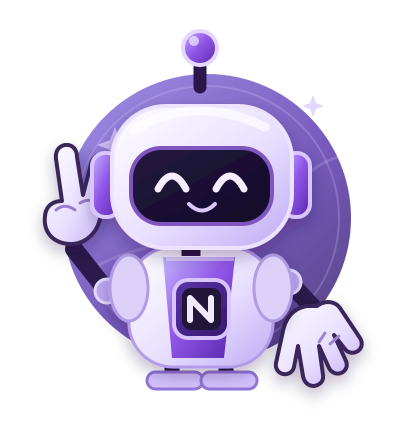

O que ele faz por você?
1. Envia mensagens de boas-vindas para receber os novos membros da comunidade.
2. Possui moderação automática para identificar mensagens e links suspeitos.
3. Organiza avisos e comandos úteis para facilitar o trabalho dos administradores.